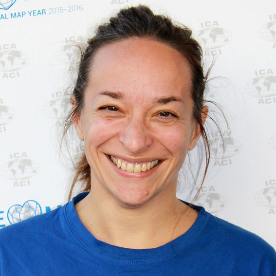

The GeoVIS team provides geovisualization knowledge, methods and tools allowing various users to design graphic representations of spatio-temporal phenomena, and to infer spatio-temporal knowledge from the interaction with some dimensions of a phenomenon, based on spatial data (maps, imagery, 3D models, DTM, point clouds, etc.) and external data (texts, photographies, web data, thematic data, etc.). The heterogeneity (source, scale, content, precision, dimension, temporality) and the imprecision of these data and of represented phen omena imply to address the following issues: The GeoVIS team contributes in geovisualization, which encompasses cartography, GIS, InfoVis, computer graphics and image processing fields of study.
L'équipe fournit des connaissances formalisées, méthodes et outils de géovisualisation permettant à des utilisateurs variés, de concevoir des représentations graphiques de phénomènes spatio-temporels, sur lesquelles raisonner spatialement et temporellement, en leur permettant d'interagir avec une ou plusieurs dimensions du phénomène, à partir de données géographiques (cartes, imagerie, modèles 3D, modèles numériques de terrain, nuages de points, etc.) et de données externes spatialisées (textes, photographies, données du web, données thématiques, etc.). L’hétérogénéité (source, échelle, contenu, précision, dimension, temporalité) et l'imprécision de ces données comme des phénomènes représentés, impliquent de résoudre des problématiques de :
Responsable de l'équipe: Head of the team: Sidonie Christophe 
News
Actualités
- ISPRS 2020: Accepted publications -
- ISPRS 2020: Publications acceptées -
-
Brédif M., Caraffa L., Yirci M., Memari P. Provably Consistent Distributed Delaunay Triangulation. Annals.

- Coetzee S., Rautenbach V., Çöltekin A., Madden M., Pettit C., Christophe S., Lkhamjav O. Towards SDG 4: Trade-offs for geospatial open educational resources. Archives.
-
Gautier J., Christophe S., Brédif M. Visualizing 3D climate data in urban 3D models. Archives.

- Lelégard L., Le Bris A., Giordano S. Correction of systematic radiometric inhomogeneity in scanned aerial campaigns using principal component analysis. Annals.
-
Lobo M.-J., Christophe S. Opportunities and challenges for Augmented Reality situated geographical visualization. Annals.

- Paiz Reyes E., Brédif M., Christophe S. Geometric distortion of historical images for 3D visualization. Annals.

-
Perrin O., Christophe S., Jacquinod F., Payrastre O. Visual analysis of inconsistencies in hydraulic simulation data. Archives.

-
Touya G., Brisebard F., Quinton F., Courtial A. Inferring the Scale and Content of a Map Using Deep Learning. Archives.

- Job Opportunity -
- Offre de poste -
- Enseignant-chercheur ENSG- LaSTIG/GEOVIS - Géovisualisation et Cartographie
- [Internship] [Stage] Aide à la comparaison visuelle de scénarios de simulation d’aléas hydrauliques (Projet Urba Risk Lab)
- [Internship] [Stage] Exploration immersive de fonds iconographiques via le graphe de métadonnées (ANR ALEGORIA, avec STRUDEL)
- [Internship] [Stage] Cognitive model of interaction without vision for tactile exploration of 3D maps (ANR ActivMAP)
- Workshops / Seminars -
- Workshops / Séminaires -
- CFP SimVisu2020: Visualization of complex spatio-temporal data & phenomena on earth? - @ISPRS2020
- Abs2019 "Abstraction, Scale and Perception", ICC2019, July 2019, Tokyo, Japan → Website ←
- New Projects -
- Nouveaux Projets -
- ANR ACTIVMap → https://activmap.limos.fr/en/
- ANR ACTIVMap → https://activmap.limos.fr/
- New People -
- Nouveau Arrivants -


Research topics
Sujets de recherche


Visualization → Visual integration and complexity, abstraction and level of detail (generalization, symbolization), graphic representation (graphic semiology, style).
Visualisation → Intégration et complexité visuelle, abstraction et gestion du niveau de détail (généralisation, symbolisation), représentation graphique (sémiologie graphique, style).


Interaction → Interaction between the users and the visualization, according to the support and use context, the users' tasks, and the visual characteristics or the specific spatial phenomena of study: interaction techniques and models, data and representations continuums, and also analysis and learning from interaction activities and traces.
Interaction → Interaction entre l'utilisateur et la visualisation, en fonction du support et du contexte d’utilisation, des tâches de l'utilisateur, et des caractéristiques visuelles ou phénomènes spatialisés à étudier : techniques et modalités d’interaction, continuums de données et de représentations, analyse et apprentissage à partir des traces d’interaction.


Spatial Immersion → Immersion through devices facilitating visual, tactile and sensitive perception, and the design of geographical spaces: virtual, augmented and mixed realities, tactile maps.
Immersion spatiale → via des dispositifs facilitant la perception visuelle, tactile et sensorielle, et le design des espaces géographiques : réalités virtuelle, augmentée et mixte, cartes tactiles.


Graphic rendering → Improvement of the physical rendering of images, geometric and radiometric analysis, web diffusion of massive data, and real-time 3D rendering.
Rendu Graphique → Amélioration du rendu physique des images, analyse géométrique et radiométrique, diffusion web de données massives, rendu 3D temps réel.
User experience (UX) → Visual tests, surveys, and prototypes.
Expérimentation utilisateur (UX) → Tests visuels, enquêtes, prototypage.
Staff
Membres
Permanent staff:
Membres permanents:
 Mathieu BRÉDIF Senior researcher Chargé de recherche | Sidonie CHRISTOPHE Senior researcher -Head of GEOVIS team- Chercheur HDR -Résponsable de GEOVIS- |  Alexandre DEVAUX Research engineer Ingénieur de recherche |
 Florence JACQUINOD Teacher-researcher (EIVP) Enseignante-chercheuse (EIVP) |  Lâmân LELÉGARD Research engineer Ingénieur de recherche | María JesúsLOBO Research scientist (MTES) Chargée de recherche (MTES) |
Imran LOKHAT IT scientist Informaticien |  GuillaumeTOUYA Senior researcher Chercheur HDR |
- Temporary staff -
- CDD -
 Sébastien BINIEK PhD student Doctorant |  Azelle COURTIAL PhD student Doctortante |  Jacques GAUTIER Post-doc Post-doc |
 Evelyn PAIZ PhD student Doctortante |  Qasem SAFARIALLAHKHEILI PhD student Doctorant |
- Alumni -
- Anciens -
- Pierre BIASUTTI, PhD student Doctorant
Projects
Projects
- On-going research projects -
- Projets en cours -
Computer Assisted Map Design for Visually Impaired People.
• Leader: Jean-Marie Favreau (LIMOS, Clermont-Ferrant). G. Touya & S. Christophe involved.
Advances on urban Climate Services
• Leader: Valéry Masson (MétéoFrance). J. Gautier (post-doc URCLIM), S. Christophe & M. Brédif involved.
• Leader: Valérie November (LATTS - -ENPC). G. Touya & S. Christophe involved.
Advanced Linking And Exploitation Of DiGitized Ge0gRaphic Iconographic HeritAge
• Leader: V. Gouet-Brunet (IGN)
Dynamiques Sociales en contexte urbain: outils, modèles et données libres -- Paris et ses banlieues, 1789-1950
• Porteur: J. Perret (IGN)
- Past research projects -
- Projets passés -
Techniques de multiplexing cartographique
• Porteur: G. Touya (IGN)
The purpose of MapStyle ANR project is to experiment rendering methods coming from Computer Graphics in order to control the style of cartographic renderings, taking into account cartographic constraints
• Porteur: S. Christophe (IGN)
Publications
- Main publications since 2018 -
- Publications majeures depuis 2018 -
• Brédif M., Caraffa L., Yirci M., Memari P. Provably Consistent Distributed Delaunay Triangulation. Annals ISPRS2020. Accepted.Accepté.
• Coetzee S., Rautenbach V., Çöltekin A., Madden M., Pettit C., Christophe S., Lkhamjav O. Towards SDG 4: Trade-offs for geospatial open educational resources. Archives ISPRS2020. Accepted.Accepté.
• Çöltekin, A., Griffin, A. L., Slingsby, A., Robinson A. C., Christophe, S., Rautenbach, V., Chen, M., Pettit, C., Klippel, A. (2020). Geospatial Information Visualization and Extended Reality Displays. Chapter 7, Manual of Digital Earth, ISDE. Accepted.Accepté.
• Dumont M., Touya G., Duchêne C. Designing multi-scale maps: lessons learned from existing practices. International Journal of Cartography, 6:1, 121-151, 2020. <10.1080/23729333.2020.1717832>
• Gautier J., Christophe S., Brédif M. Visualizing 3D climate data in urban 3D models. Archives ISPRS2020. Accepted.Accepté.
• Lelégard L., Le Bris A., Giordano S. Correction of systematic radiometric inhomogeneity in scanned aerial campaigns using principal component analysis. Annals ISPRS2020. Accepted.Accepté.
• Lobo M.-J., Christophe S. Opportunities and challenges for Augmented Reality situated geographical visualization. Annals ISPRS2020. Accepted.Accepté.
• Paiz Reyes E., Brédif M., Christophe S. Geometric distortion of historical images for 3D visualization. Annals ISPRS2020. Accepted.Accepté.
• Perrin O., Christophe S., Jacquinod F., Payrastre O. Visual analysis of inconsistencies in hydraulic simulation data. Archives ISPRS2020. Accepted.Accepté.
• Touya G., Lokhat I. Deep Learning for Enrichment of Vector Spatial Databases: Application to Highway Interchange. ACM Transactions on Spatial Algorithms and Systems, ACM, In press. 2020.
• Touya G., Brisebard F., Quinton F., Courtial A. Inferring the Scale and Content of a Map Using Deep Learning. Archives ISPRS2020. Accepted.Accepté.
• Biasutti P., Aujol J-F., Brédif M., Bugeau A. (2019). Détection d’objets dans un nuage de points LiDAR en topologie capteur. Poster. Journées de la Recherche 2019
• Biniek S., Touya G., and Rouffineau G. ‘Fifty Shades of Roboto: Text Design Choices and Categories in Multi-Scale Maps’. In 29th International Cartographic Conference (ICC 2019), 1:1–8. Advances in Cartography and GIScience of the ICA. Tokyo, Japan, 2019. https://doi.org/10.5194/ica-adv-1-2-2019.
• Christophe, S. (2019). Color Theory. The Geographic Information Science & Technology Body of Knowledge (1st Quarter 2019 Edition), John P. Wilson (Ed.). DOI: 10.22224/gistbok/2019.1.9
• Fillières-Riveau, G. (2019). Relief map design tool for visually impaired people. Poster. Journées de la Recherche 2019
• Paiz Reyes, E. (2019). Image based rendering of large historical image collections. Poster. Journées de la Recherche 2019
• Pierkot C., Christophe S., Girres J-F. (2019). Exploring multiplexing tools for co-visualization in crisis units. 16th International Conference on Information Systems for Crisis Response and Management (ISCRAM 2019) Valencia, Spain, May 19-22. p.403-420.
• Safariallahkheili, Q. (2019). Style Exploration & Interpolation for 3D Geovisualization. Poster. Journées de la Recherche 2019
• Touya G., Xiang Z., and Lokhat I.. ‘Is Deep Learning the New Agent for Map Generalization?’ International Journal of Cartography, 9 May 2019, 1–16. https://doi.org/10.1080/23729333.2019.1613071
• Biasutti P., Aujol J.F., Brédif M., Bugeau A. Diffusion and inpainting of reflectance and height LiDAR orthoimages. Computer Vision and Image Understanding, Elsevier, 2018. doi:10.1016/j.cviu.2018.10.011 (ISSN 1077-3142)
• Biasutti P., Aujol J.F., Brédif M., Bugeau A. Range-Image: Incorporating sensor topology for LiDAR point cloud processing. PE&RS Photogrammetric Engineering & Remote Sensing, ASPRS American Society for Photogrammetry and Remote Sensing, 2018, 84 (6), pp.367--375. <10.14358/PERS.84.6.367>.
• Devaux, A., C. Hoarau, M. Brédif and S. Christophe (2018) 3D urban geovisualization: in situ augmented and mixed reality experiments. ISPRS Annals of the Photogrammetry, Remote Sensing and Spatial Information Sciences.
• Touya G., Christophe S., Favreau J. M., and Rhaiem A. B.,. ‘Automatic Derivation of On-Demand Tactile Maps for Visually Impaired People: First Experiments and Research Agenda’. International Journal of Cartography, 2018. https://doi.org/10.1080/23729333.2018.1486784.